/Current Source Design/電路圖.png)
/Fully differential OP/電路圖.png)
/Single stage amplifier-CS stage & Differential amplifier/電路圖.png)
國立交通大學 夜間學分班
類比積體電路設計 A+
銘傳電子系_累計班排第 1 ｜ 交大類比積體電路設計學分班 A+ ｜ 現職久元電子 ATE 硬體開發工程師
我是陳彥邦，一位結合理性邏輯與實作熱忱的硬體開發工程師。
我的核心理念是：「再好的理論，如果不能親手焊在板子上、燒進 FPGA、用示波器量出來，就不算真的學會」
我追求的不是學術或職涯的單一成就，而是「 系統級的完整視野 」。從高中對物理數學的邏輯推導，到大學對電路實作的狂熱，再到職涯中不斷拼湊半導體產業的上下游環節，我的每一步都旨在解決工業現場最複雜、最嚴苛的技術難題。我享受那種從無到有、親手實現精密控制的成就感，這也引領我持續向「 全數位化電源控制 」的目標邁進。
我的學術軌跡清晰呈現了從理論到實作的一步一腳應過程：
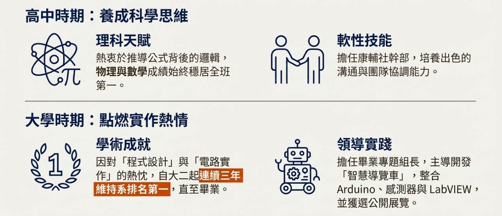
我的職涯是一張精心佈局的半導體地圖，旨在構建從系統終端 (鴻海)、上游設計 (銳發) 到 中段封測 (久元 ATE)的完整系統視角。
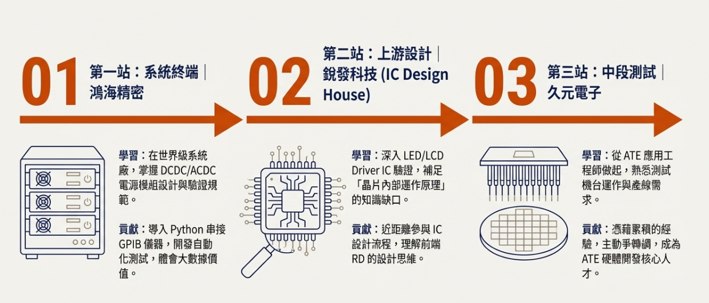
我是徹底的「實作導向」者。能透過系統化方法完成極具挑戰性的任務，是團隊中最可靠的實踐者。
成功打破理工男刻板印象。具備良好的溝通與協調能力，無論是跨部門協作或處理客戶抱怨，皆能理性圓融，確保專案順利推動。
不斷擴展技能邊界。公餘自學 Python/AI，甚至獨立開發全自動 YT 經營系統。這種 Self-driven 的特質，確保我能適應科技產業的快速變遷。
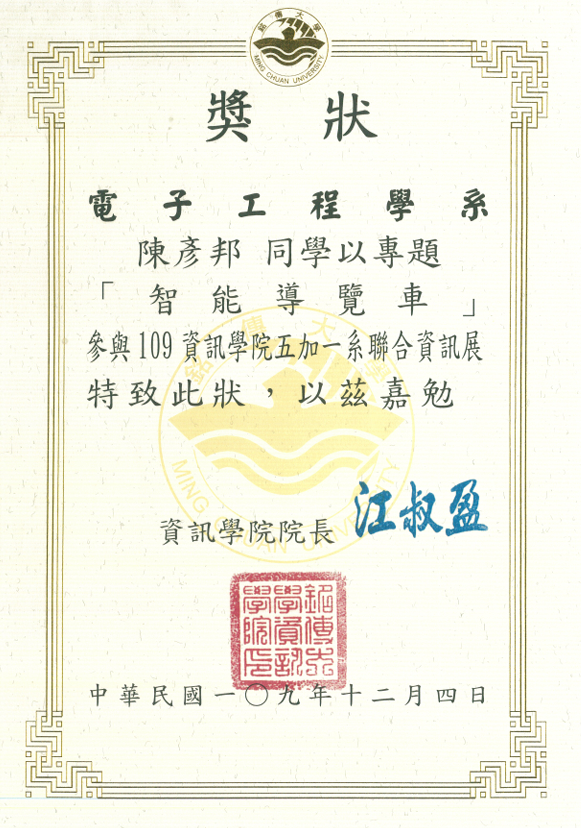
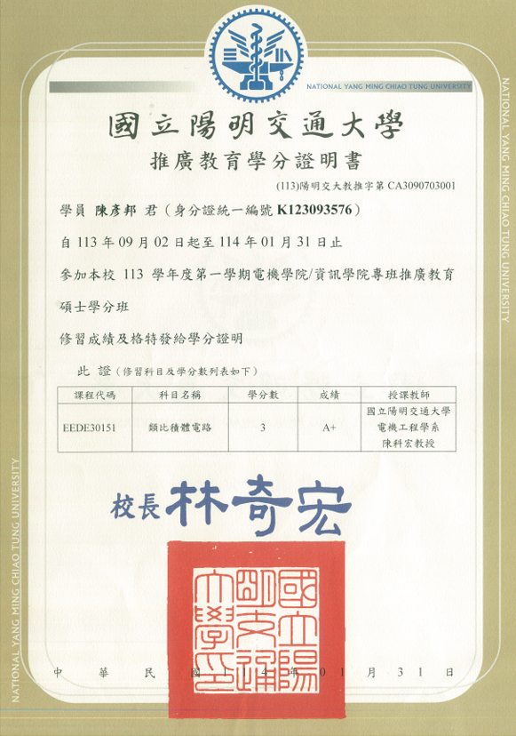
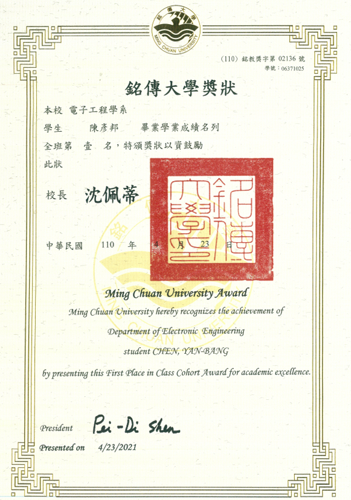
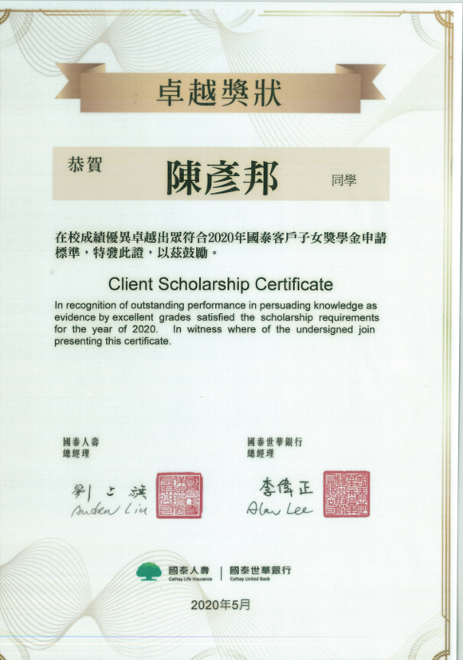
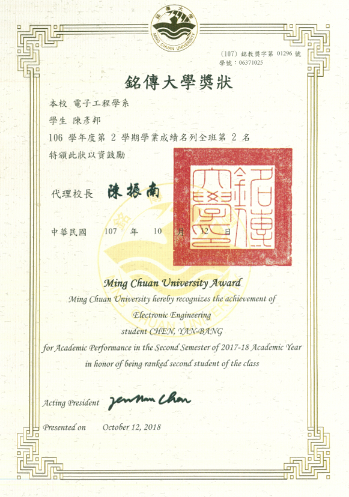
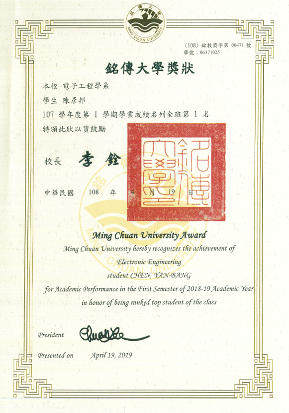
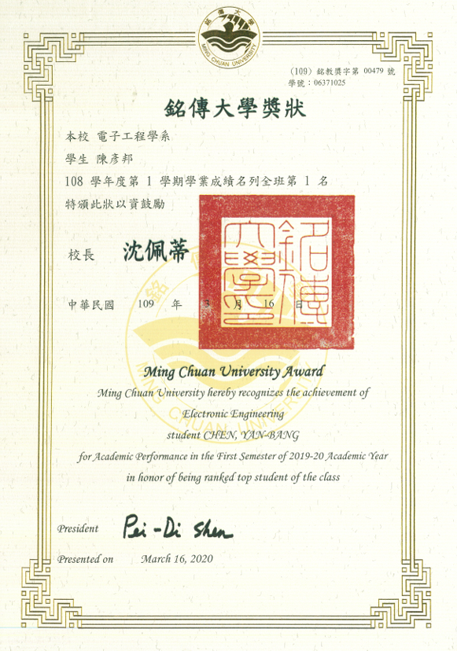
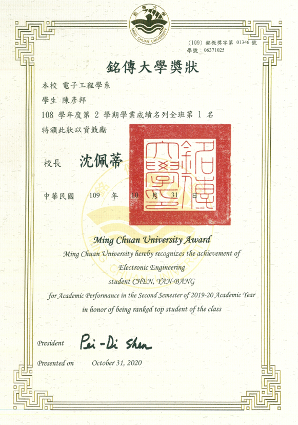
這不只是一個 YouTube 頻道，而是我對 AI 的技術實踐展示。我構建了一套全自動工作流，實現了24小時無人值守的內容生產。
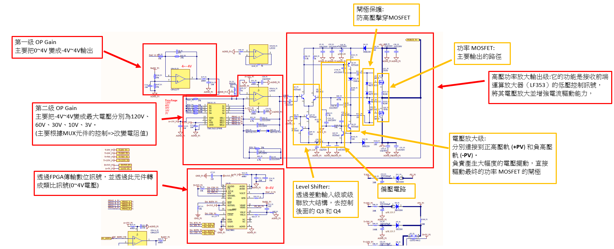
透過DAC輸出類比訊號，並透過OP gain來設計輸出電壓。 再透過MOSFET的電路設計來將功率放大。
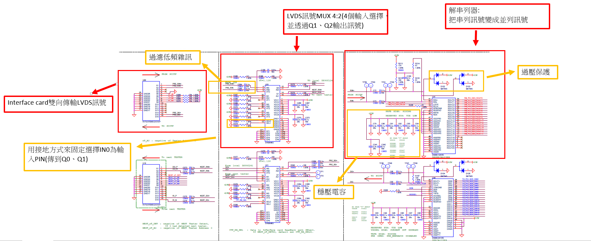
把LVDS訊號從PC端經過SerDes轉換成Parallel Digital訊號
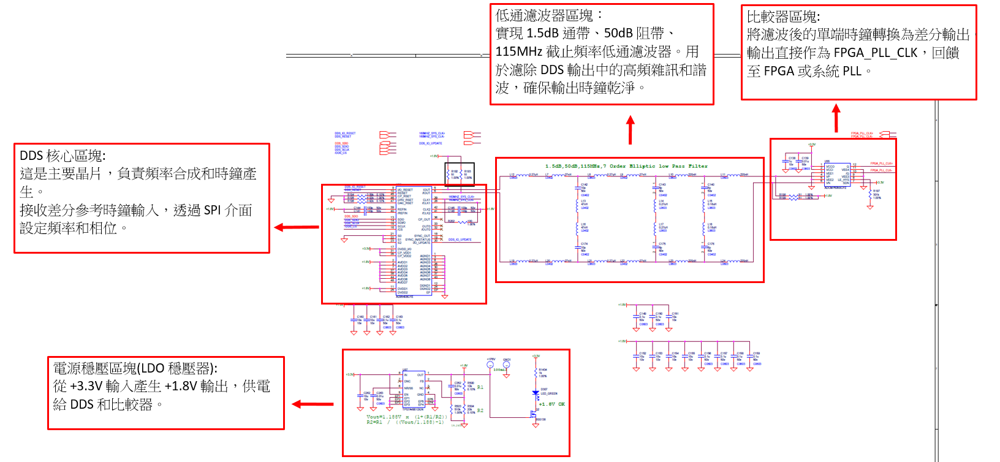
透過晶片&SPI訊號，調整晶體震盪器CLK頻率及相位，並透過電感電容來做的低通濾波器。
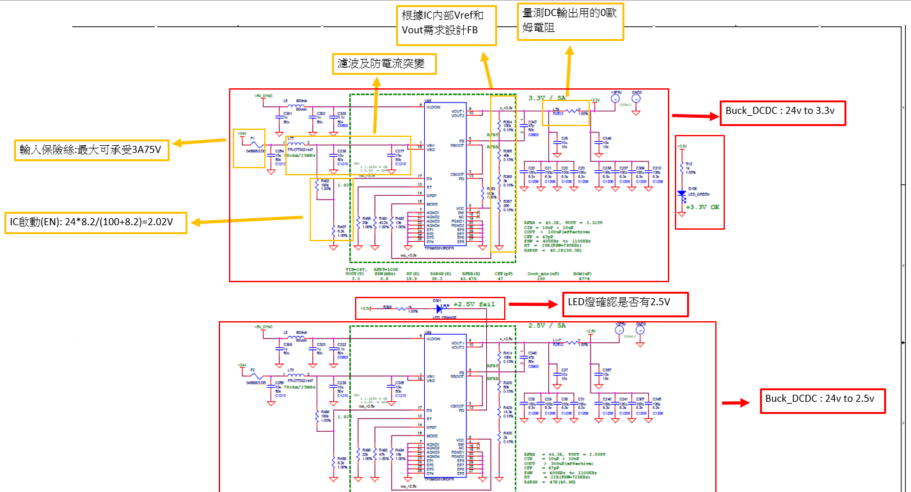
使用現成PMIC搭配外部電路來做DCDC的設計

使用 Allegro 繪製的簡易電路板，並製成實體展示。

Micro LED 顯示屏點屏測試與調適，確保畫面能正常顯示。
使用 C# 設計數位控制面板，並透過SPI的方式控制 MAX10 晶片，進行FT自動化測試。

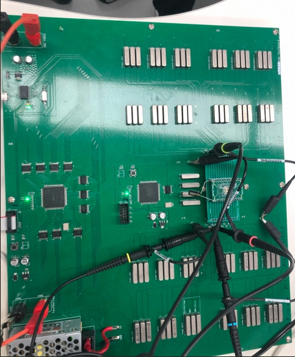


透過 C# 介面控制 MCU 發送 I2C 訊號，用於產品測試。

Python GUI 數位介面控制示波器、E-load、Power、Meter，自動量測 DCDC 測試項目。
點擊檢視波形圖 ：


_轉md檔/成果.png)
/成果.png)


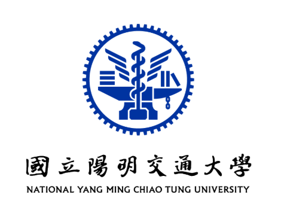
類比積體電路設計 A+
累計班排第1
二類組 物理小老師
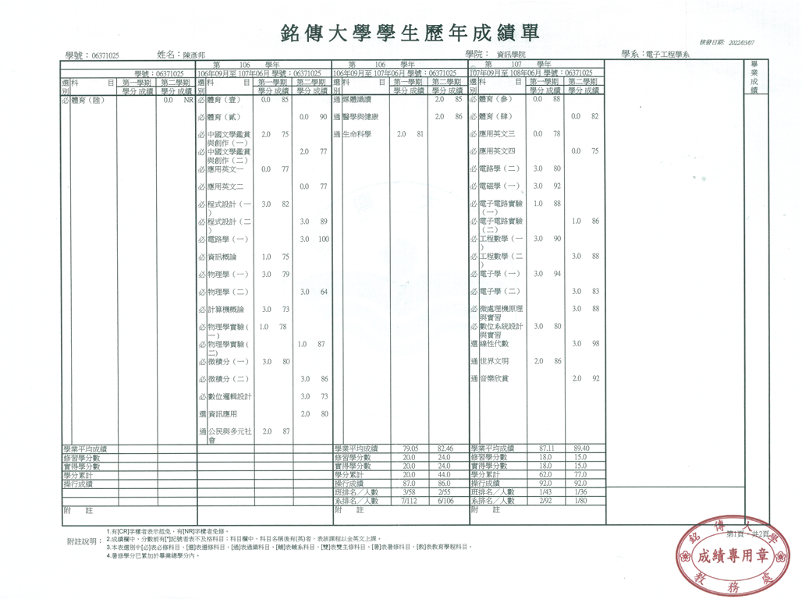
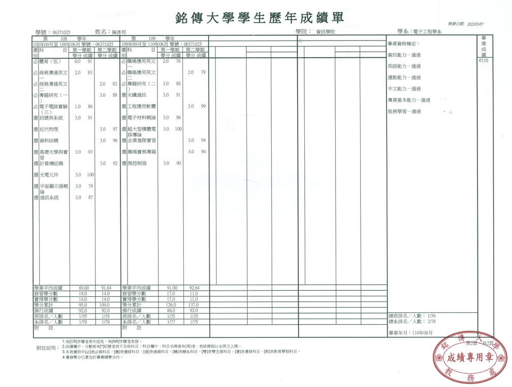
硬體開發工程師（ATE部門）
應用工程師（ATE部門）
高級應用工程師
硬體測試工程師（HWQA Power team）
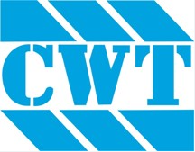
助理工程師實習生（電源研發部）
qaz611440@gmail.com
0910-817-152